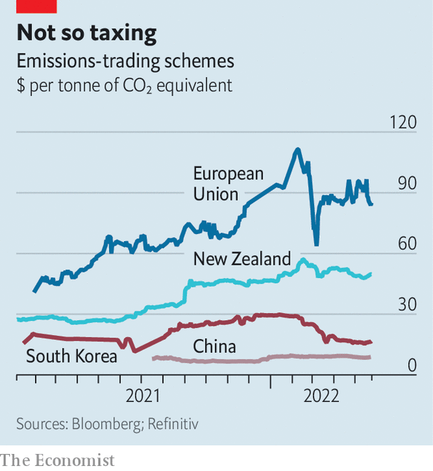
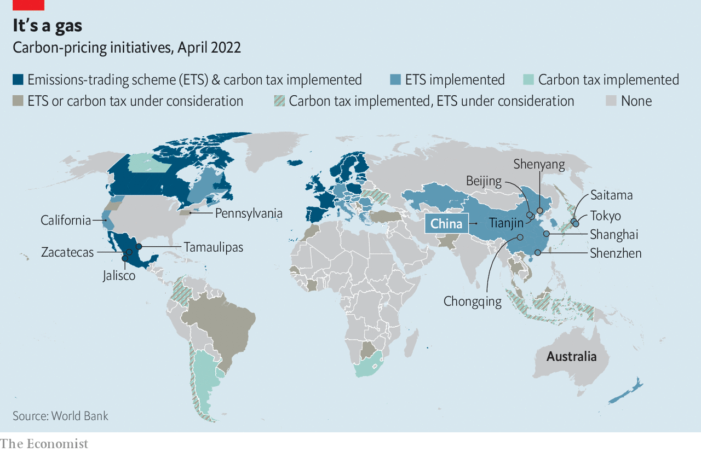

Carbon markets, for years short of puff, have at last become one of the most widespread tools in the fight against climate change. By the end of 2021 more than 21% of the world’s emissions were covered by some form of carbon pricing, up from 15% in 2020. Ever more businesses have to pay regulators for the right to release a tonne of carbon dioxide into the atmosphere. Investors are getting interested too: trading on these markets grew by 164% last year, to €760bn ($897bn).
That is undoubtedly great news. Carbon prices ensure companies that burn more fossil fuels are at a competitive disadvantage while green innovation is rewarded. The revenue from the sale of carbon permits, meanwhile, can be reinvested in renewable energy or other virtuous ventures as governments see fit.
The problem is that very few markets work as intended. Of the 64 carbon taxes and emissions-trading systems (etss) that existed in 2021, only a tiny minority, covering 3.8% of emissions, priced the gas above $40 a tonne, which the Carbon Price Leadership Coalition, a group of businesses and governments, estimates as the minimum social cost of carbon (a measure of the damage done to global welfare by increasing emissions). And that may be too generous already: some economists put it at more than $200. Many carbon markets are too cheap to make a difference.
Most schemes operate on the principle of “cap and trade”. Regulators set a total level of permitted annual emissions—the cap—and auction these allowances to the companies included in the scheme. Businesses can then trade the allowances between themselves, putting a price on carbon dioxide. Some etss also allow financial firms such as hedge funds to trade, purely for profit, on their own account.
The best markets put a high price on carbon thanks to a low cap that goes lower over time, providing a strong incentive to go green. They also cover a broad spectrum of economic activity, allowing agents to trade off between burning petrol in cars, coal in blast furnaces or natural gas in power plants. The wide scope ensures that trading systems find the cheapest way of reducing emissions, lowering the overall cost to society of fighting climate change.
Many schemes, however, fall short on both counts. The reason is obvious: a well-functioning ets demands political courage. Like taxes, carbon markets transfer resources from the private sector to the state, which irks those standing for small government. Higher carbon prices can also help to push up consumer prices, angering voters, while hurting the margins of firms that donate to political parties. How ambitious carbon markets are is “an expression of political will”, says Dallas Burtraw, who chairs the independent committee overseeing California’s trading scheme. All too often that will is missing.
Changing political winds have sometimes dealt a fatal blow to fledgling carbon markets. Australia, for example, junked its own scheme in 2014 after the centre-right Liberal party made repealing the “carbon tax” a plank of its election campaign.

More often political heat leads governments to do all they can to keep prices low (see chart). On May 18th the European Commission, pressed by member states worried about soaring energy prices, said it would sell an extra 200m permits (there are currently 1.45bn in circulation). Carbon prices on the eu scheme, the world’s second-biggest, promptly fell from €90 ($97) a tonne to around €80. Other schemes have been flooded with permits from the start. China’s ets, launched last year, is the world’s biggest. But with a price nearing 60 yuan ($9) it does little to reduce emissions, says Yan Qin of Refinitiv, a data firm.
The second problem is that swathes of the economy are often excluded. Industrial firms argue that including them in a robust ets gives an unfair advantage to exporters from countries with a lower carbon price, which is why the eu and others offer home-grown champions a certain amount of permits for free. Although meant to prevent “carbon leakage”, where steel firms, say, relocate from areas with strict emissions rules to those with looser standards, such perks make schemes less effective.
Consumers, too, are often shielded from high carbon prices. Transport and buildings, where higher costs would be passed on to voters directly, are excluded from the eu’s scheme. Others do better: the Californian system, the most comprehensive of the bigger etss, covers 80% of the state’s emissions. Proceeds from the sales of carbon permits are partly used to subsidise purchases of electric cars.

Other markets are even more limited in scope. The Regional Greenhouse Gas Initiative (rggi), backed by 11 north-eastern American states, only covers power generation. So does China’s national system (given the size of the Chinese economy, it still covers 7.4% of global emissions).
Sometimes it is the way emissions are counted that is the problem. China does not put a cap on the total amount of emissions, which can still rise along with electricity demand, but on the carbon intensity of power generation. Its ets is also bedevilled by poor data collection.
Making carbon markets work better is more of a political challenge than an economic one. Neither lowering caps on total emissions nor covering more sectors requires a deep rethink of carbon markets’ designs. The difficulty, rather, is building and preserving support for measures that make most economic activities costlier. The same applies to other climate-friendly measures, notes Ben Caldecott of Oxford University: Britain has long failed to raise petrol taxes in line with inflation, costing the government billions.
Cheeringly, however, the momentum around carbon markets looks self-sustaining. The eu is considering what it calls a “carbon border-adjustment mechanism” which would see importers into the bloc pay the difference between the relevant foreign carbon price and the eu’s. Not only would that remove the justification for free allowances for manufacturing firms inside Europe; it would also encourage countries that want to export to the bloc to bring their carbon prices closer to the eu’s.
Creating bigger markets by linking two or more etss can also help plug carbon leaks. That is, of course, justifiable on scientific grounds: a tonne of carbon is as harmful in one country as it is in any other. It also makes carbon markets more liquid, which helps form truer prices. Accordingly, regional patchworks have emerged. California’s ets has been linked with Quebec’s since 2014. Switzerland’s ets merged with the eu’s in 2020. Pennsylvania will become the 12th state to join the rggi in July. And although Britain chose to run a separate ets after leaving the eu, rejoining the regional scheme should be rather painless.
As more of the world economy is covered by etss and carbon border taxes gain favour, it will be laggards rather than early adopters that risk becoming uncompetitive. That threat seems to be working. After resisting for years, Japan is set to try out a national carbon market in September. Some American lawmakers are also starting to look again at carbon pricing, if only because their country tends to be greener than many of its trade partners, and carbon border taxes could be a handy excuse for protectionist measures. The key to building support for decarbonisation, says Mr Burtraw, is to “create winners”. In a country where China-bashing tends to be more popular than environmentalism, it will do no harm to the cause if points can be scored at the expense of an arch-rival. ■
For more expert analysis of the biggest stories in economics, business and markets, sign up to Money Talks, our weekly newsletter.